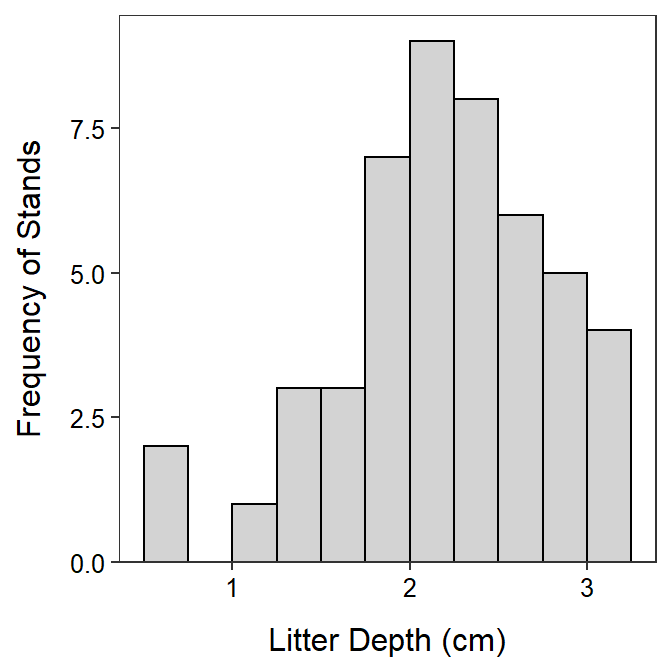
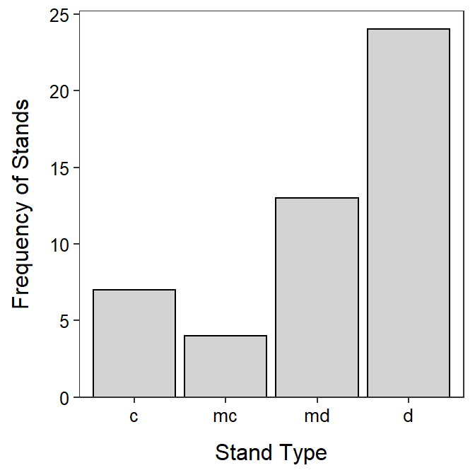

Litter depth is very slightly left-skewed with no obvious outliers (see histogram below). The center as measured by the mean is 2.222 cm and the dispersion as measured by the standard deviation is 0.591 cm (see summary statistics below). I chose to use the mean and standard deviation as measures of center and dispersion because the shape was not strongly skewed and there were no outliers.
> firedf <- read.csv("http://derekogle.com/NCMTH107/modules/CE/1_CE_KEYS/Fire.csv")
> str(firedf)'data.frame': 48 obs. of 6 variables:
$ sttype: chr "d" "d" "d" "d" ...
$ tslf : chr "0-100" "0-100" "0-100" "0-100" ...
$ tdw : num 27.7 22.6 26.2 43.6 27 41.2 46.6 27.6 89.2 39.6 ...
$ litdep: num 0.62 1.33 1.46 1.92 2.9 2.13 2.33 1.46 2.25 3.08 ...
$ fuel1h: num 0.06 0.07 0.08 0.05 0.06 0.15 0.02 0.04 0.04 0.3 ...
$ tltd : int 2382 1978 1234 1478 1901 1111 748 1055 3422 1045 ...> ggplot(data=firedf,mapping=aes(x=litdep)) +
geom_histogram(binwidth=0.25,boundary=0,color="black",fill="lightgray") +
scale_y_continuous(expand=expansion(mult=c(0,0.05))) +
labs(x="Litter Depth (cm)",y="Frequency of Stands") +
theme_NCStats()
> Summarize(~litdep,data=firedf,digits=3) n mean sd min Q1 median Q3 max
48.000 2.222 0.591 0.620 1.915 2.190 2.710 3.130 Most of the stands tend to be deciduous (50.0%) or mixed deciduous (27.1%; see bar chart and percentage table below).
> firedf$sttype <- factor(firedf$sttype,levels=c("c","mc","md","d"))
>
> ( tbl <- xtabs(~sttype,data=firedf) )sttype
c mc md d
7 4 13 24 > percTable(tbl)sttype
c mc md d
14.6 8.3 27.1 50.0 > ggplot(data=firedf,mapping=aes(x=sttype)) +
geom_bar(color="black",fill="lightgray") +
scale_y_continuous(expand=expansion(mult=c(0,0.05))) +
labs(x="Stand Type",y="Frequency of Stands") +
theme_NCStats()